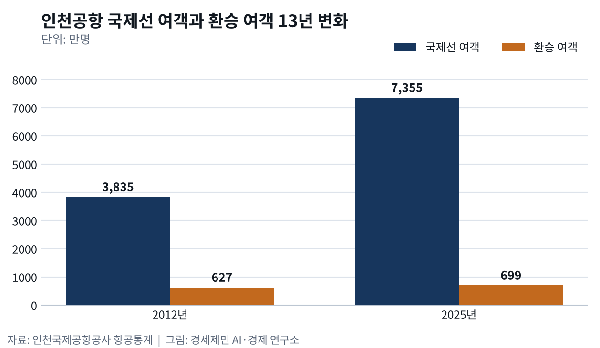
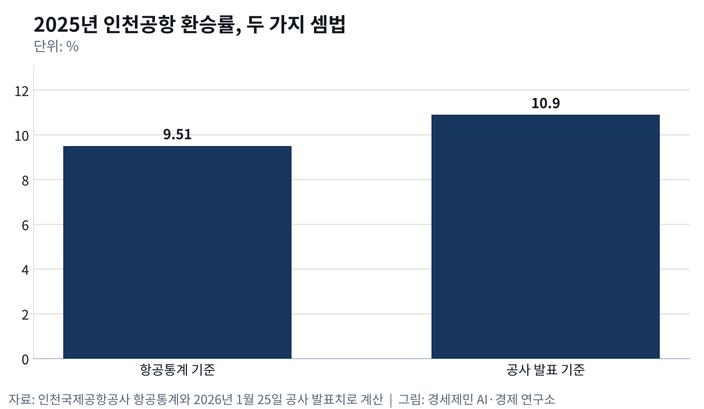

환승률 9.51% 인천공항, 허브는 10%를 지켜야
국제선 여객 1.9배 늘 때 환승 여객은 11% 늘어
2025년 환승률 9.51%, 2010년 이후 처음 10% 밑
올해 1~9월 11.5% 반등, 전쟁 뒤 3월 13.1%까지
AI경세제민=김갑봉 기자 | 올해 1~9월 인천공항 국제선 환승 여객은 669만6988명이다. 인천국제공항공사 항공통계를 보면 1년 전 549만8372명보다 21.8% 늘었다. 같은 기간 국제선 여객 5819만4784명 가운데 11.5%가 환승 여객이다.
숫자만 보면 동북아 허브 인천공항이 다시 살아났다. 그런데 바로 지난해 국제선 여객 가운데 환승 여객 비율은 9.51%였다. 공사 항공통계로 연도별 수치를 볼 수 있는 2010년 이후 처음으로 10% 밑으로 내려갔다.
환승률은 세계 승객을 인천으로 모아 다시 세계로 내보내는 힘을 보여 주는 숫자다. 갈아타는 승객이 좌석을 채워 줘야 인천에서 떠나는 국민도 더 많은 도시로 바로 날아갈 수 있다. 허브(갈아타는 거점 공항)라는 이름을 지키려면 이 숫자가 10%는 넘어야 한다.
13년째 627만~725만명, 제자리 환승 여객
인천공항 환승 여객은 13년째 제자리걸음을 하고 있다. 2012년 627만4929명이던 국제선 환승 여객은 2025년 699만2829명으로 11.4% 느는 데 그쳤다. 코로나로 하늘길이 막힌 세 해를 빼면 627만~725만명 사이를 오갔다.
같은 기간 국제선 여객은 3835만명에서 7355만명으로 1.92배가 됐다. 늘어난 여객 3520만명 가운데 환승 여객은 72만명에 지나지 않는다. 인천을 목적지나 출발지로 삼아 바로 오가는 승객이 공항을 키웠다.

[도표1] 인천공항 국제선 여객·환승 여객과 환승률 추이(인천국제공항공사 항공통계로 계산)
국제선 여객이 늘어나자 환승률은 내리막을 걸었다. 2013년 16.75%로 가장 높았던 환승률은 2016년 11.07%, 2018년 10.09%로 내려왔다. 2025년 9.51%에서 끝내 10% 선을 내줬다.
환승 여객이 가장 많았던 해는 2024년으로 725만1520명이었다. 그해 환승률도 10.26%로 이미 10% 턱밑에 와 있었다. 환승 여객이 떠난 것이 아니라 인천을 오가는 승객만 불었다.
51%와 10.9%, 셈법 달라도 10% 언저리
환승률은 무엇을 세느냐에 따라 숫자가 달라진다. 공사는 1월 25일 지난해 환승객을 804만6572명으로 발표했다. 이 수를 국제선 여객 7355만4772명으로 나누면 10.9%가 나온다.
항공통계에 잡힌 2025년 환승 여객은 699만2829명이고 같은 국제선 여객으로 나누면 9.51%다. 공사 발표치가 항공통계보다 105만명가량 많다. 두 집계가 무엇을 다르게 세는지는 공사가 공개한 자료에 나와 있지 않다.

항공통계는 환승 여객을 도착할 때 한 번, 출발할 때 한 번 센다. 한 사람이 인천에 내려 다른 비행기로 떠나면 두 명으로 잡힌다. 네덜란드 암스테르담 스키폴공항이 쓰는 국제 셈법과 같아서 두 공항을 같은 자로 견줄 수 있다.
스키폴은 지난해 11월 여객 520만명 가운데 환승 여객이 약 200만명이었다고 12월 22일 발표했다. 여객 집계 열 명 가운데 네 명꼴이 환승 여객인 셈이다. 인천은 열 명 가운데 한 명꼴이고 어느 셈법으로 재도 10% 언저리에 서 있다.
전쟁이 끌어올린 11.5%
올해 반등은 인천 안이 아니라 인천 밖에서 왔다. 2월 28일 미국과 이스라엘이 이란을 공습하자 걸프 지역 하늘길이 막혔다. 2월 8.76%였던 인천 환승률은 한 달 만인 3월 13.07%로 뛰어 지난해 3월 11.00%를 크게 넘었다.
4월부터 9월까지 환승률은 매달 11~12%대를 지켰다. 9월 환승 여객은 77만2304명으로 1년 전보다 41.7% 늘었다. 공사는 두바이를 거치던 수요가 인천 직항과 환승으로 옮겨 왔다고 8월 13일 분석했다.
전쟁으로 막혔던 중동 하늘길이 다시 열리고 있다. 두바이 에미레이트항공은 9월 10일 운항 규모를 전쟁 전 93% 수준까지 되살렸다고 밝혔다. 전쟁 전인 1월과 2월 인천 환승률은 9% 안팎이었다. 올해 11.5%는 인천 실력이라기보다 전쟁이 빌려준 숫자에 가깝다.
허브를 잃으면 돌아오지 않는다
허브 지위는 한번 잃으면 되찾기 어렵다. 이탈리아 베르가모대·브레시아대 연구진은 1997~2009년 허브 기능을 잃은 공항 사례를 모아 분석하고 2012년 국제 학술지에 실었다.
이런 공항은 평균 5년이 지나도 원래 교통량을 되찾지 못했다. 연구진은 허브 상실을 되돌리기 어렵다고 결론지었다. 취항지 수보다 항공사가 공급하는 좌석이 더 크게 줄었다. 저비용항공사가 허브 항공사 빈자리를 일부 메운 공항은 평균적으로 더 빨리 회복했다.
허브를 지키는 힘은 결국 갈아탈 노선에서 나온다. 에어프레미아는 올해 상반기 환승객이 3만9110명으로 1년 전보다 454.2% 늘었다고 8월 3일 밝혔다. 자기 항공편끼리 갈아탄 승객이 가장 많은 길은 뉴욕~인천~나리타였다.
뉴욕에서 오는 장거리 좌석을 일본 도쿄로 가는 환승객이 채운 셈이다. 미국 유나이티드항공도 9월 5일부터 인천~뉴어크 노선에 보잉 787-9를 매일 띄운다. 미국 국적 항공사 가운데 서울과 뉴욕을 바로 잇는 곳은 유나이티드항공뿐이다.
유나이티드항공은 뉴어크를 미국 동부 허브로 삼아 미국 곳곳으로 이어지는 연결망을 갖췄다. 공사는 이 노선으로 미국 동부와 중남미로 가는 환승 여객 편의가 커질 것으로 내다봤다. 갈아탈 길이 늘어나야 인천을 거치는 환승 여객도 함께 는다.
10%는 2010년부터 15년 동안 한 번도 무너지지 않던 선이다. 지난해 그 선이 깨졌고 올해는 전쟁이 다시 끌어올렸다. 반등을 노선으로 굳힐지, 전쟁과 함께 흘려보낼지에 인천이 허브로 남느냐가 달렸다.
※ 이 기사는 AI 프로그램 클로드를 활용해 작성했습니다.

참고문헌
기관 자료
- 인천국제공항공사, 「인천공항 통계보기 — 시계열 통계(국제선 여객·환승승객, 2010년~2026년 9월)」, 2026년 10월 11일 조회. https://www.airport.kr/fsmFsn/co_ko/statisticCategoryOfTimeSeries.do
- 인천국제공항공사, "인천공항, 지난해 역대 최다 항공운송실적 달성", 2026년 1월 25일. https://www.airport.kr/bbs/co_ko/84/139214/artclView.do
- 인천국제공항공사, "인천공항, 개항이후 처음으로 상반기 국제여객 세계 1위 달성", 2026년 8월 13일. https://www.airport.kr/bbs/co_ko/84/139530/artclView.do
- 인천국제공항공사, "인천공항, 뉴어크 신규 취항으로 미주 네트워크 확대", 2026년 9월 6일. https://www.airport.kr/bbs/co_ko/84/139562/artclView.do
- Royal Schiphol Group, "Traffic and transport figures for November 2025", 2025년 12월 22일. https://news.schiphol.com/traffic-and-transport-figures-for-november-2025/
연구 논문
- Redondi, R., Malighetti, P., & Paleari, S., "De-hubbing of airports and their recovery patterns", 『Journal of Air Transport Management』 18(1), 2012년 1월, pp.1-4. https://doi.org/10.1016/j.jairtraman.2011.04.002
언론기사
- 김정환, "미·이스라엘-이란 충돌 여파…중동 여행 '빨간불'", 뉴시스, 2026년 3월 1일. https://mobile.newsis.com/view/NISX20260301_0003530905
- 김수영, "두바이행 항공기 회항…호텔 부르즈알아랍 드론 파편 맞아 화재", 한국경제, 2026년 3월 1일. https://www.hankyung.com/article/2026030120557
- 경예은, "이란 전쟁 여파에 두바이 국제공항 운영 또 일시 중단", 헤럴드경제, 2026년 3월 7일. https://www.heraldk.com/article/2026030701103929431
- 편은지, "에어프레미아 환승객 5배로 뛰었다…미주·아시아 잇는 '인천 허브'", 데일리안, 2026년 8월 3일. https://www.dailian.co.kr/news/view/1673761/
- "에어프레미아, 상반기 환승객 454% 증가…인천공항 연결성 강화", 헤럴드경제, 2026년 8월 3일. https://www.heraldk.com/article/2026080315310619531
- 김명상, "새로운 뉴욕 하늘길…유나이티드, 5일 인천-뉴어크 노선 신규 취항", 헤럴드경제, 2026년 9월 5일. https://www.heraldk.com/article/2026090502543482114
- 김정환, "관광공사, 유나이티드항공 뉴어크~인천 취항 계기 美 방한객 유치 확대", 뉴시스, 2026년 9월 7일. https://www.newsis.com/view/NISX20260907_0003778722
- Hind Aldah, "Emirates operating at 93% capacity as 98% of network returns to normal", Khaleej Times, 2026년 9월 10일. https://www.khaleejtimes.com/business/aviation/uae-flights-emirates-airline-recovered-56-per-cent-of-its-network-few-days-after-war-started
- 염재인, "역습 나선 중동 항공사들⋯ 인천공항 '유럽 환승객' 방어전 비상", 브릿지경제, 2026년 9월 20일. https://www.viva100.com/article/20260920500438
※ 이 기사는 인공지능을 활용해 작성했습니다. 사실관계는 저자가 확인했습니다.
관련기사
- 나리타 환승 6%↓ 인천 20%↑, 도쿄와 다투는 일본발 미주 환승
- 반도체 운송액 110%↑, 인천공항 화물 장비·바이오·특송으로 넓혀야
- 면세 임대료 41%↓ 인천공항, 다음 금고는 항공사다
- 새 여객기 81% 소형기, 직항 대세에 허브는 뭘까
저작권자 © AI경세제민 무단전재 및 재배포, AI학습 및 활용 금지